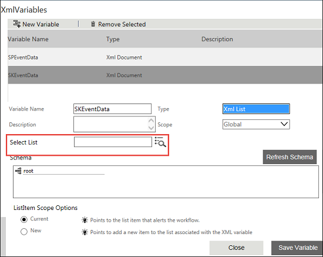

'XML List' XML Variable Property
Description
Select List
User can enter list name in this field or use the  icon to select the required list.
icon to select the required list.
No
An XML List type XML Variable can be mapped to any list schema, that is either to lists provided out of the box or to lists created dynamically using create list option, to perform retrieval of data of a list item.
Using XML list XMLVariable, you can fetch the data from any list. XML Variable for XML list can be mapped to any XML List schema for inserting, updating and retrieving list items. Also you can attach the list to a workflow very easily in a few steps.
XML Variable of type 'XML List':
When the variable type is changed to XML List, the following extra properties and ListItem Scope Options are displayed as seen in the image below.

Property Description:
'XML List' XML Variable Property |
Description |
Select List |
User can enter list name in this field or use the |
The following are the ListItem Scope Options:
See Creating an XML List type XML Variable for more information.